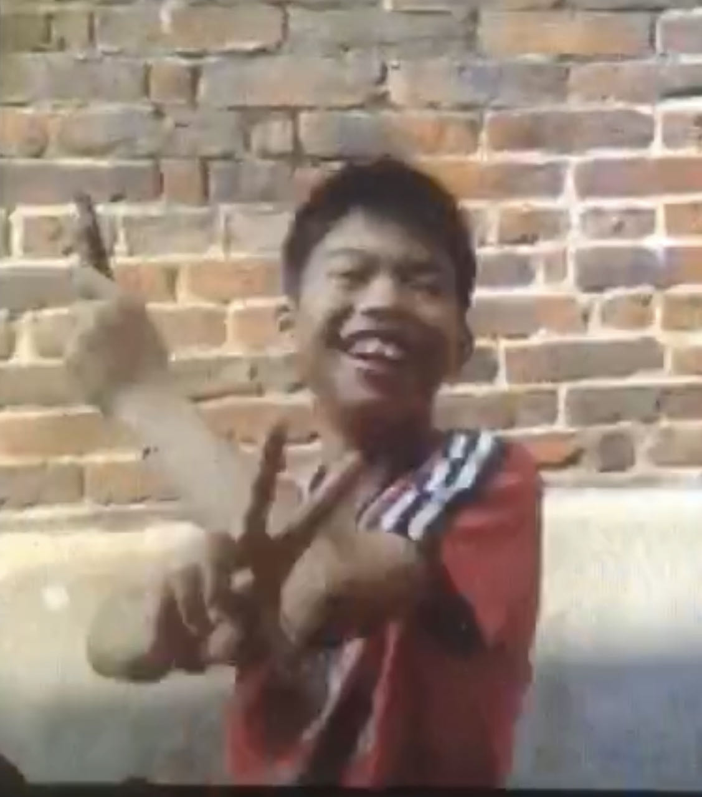
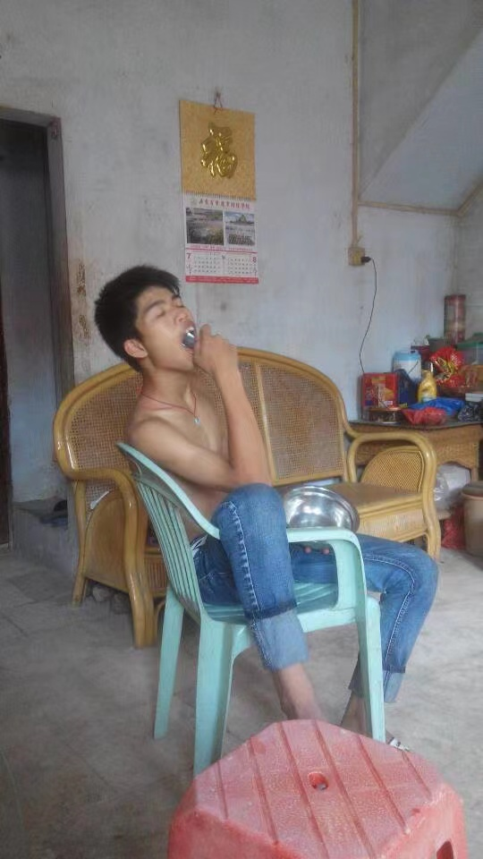
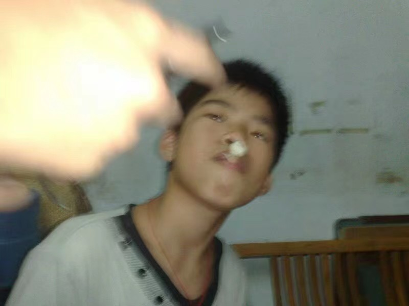
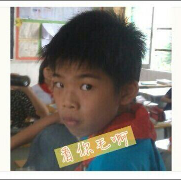
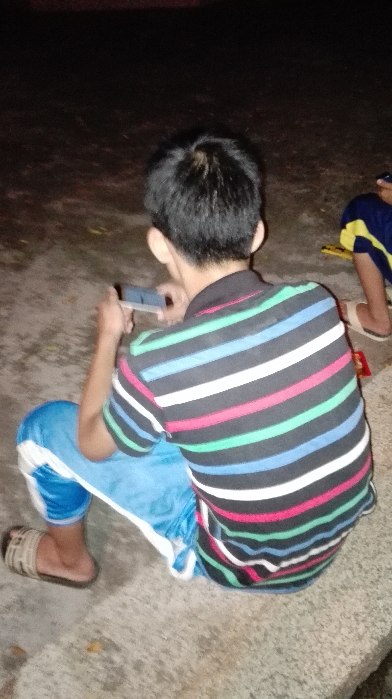
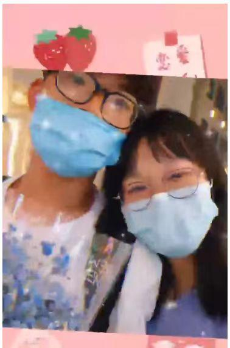
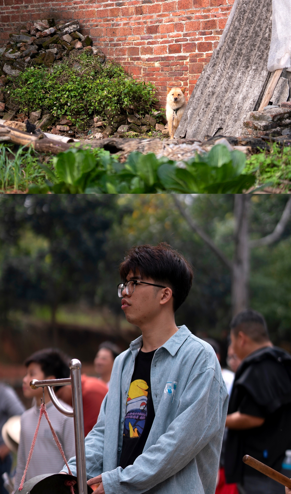

这张手捧泡面的影像，铭刻着他无上荣光的史诗级定格。
大旗名嘴，
降维打击的社交艺术
在广东省肇庆市高要区白土镇的大旗村，流传着一个不朽的传说。他，江湖人尊称“叨哥”，自幼骨骼清奇，卓尔不群。
作为公认的“大旗名嘴”，他的沟通艺术跨越了岁月的长河，上至八旬老翁，下至三岁黄口，皆能谈笑风生，毫无代沟。他是天生的社交王者，在平凡的世界里，活出了不平凡的自我。
少年统帅与味蕾探险家
做为大师，他更喜欢别人叫他大师。因为这个花名可以让人崇拜，他也沉醉于说教与引领他人前行的感觉。

惊天动地的统帅
作为大旗小学的班长，他时刻散发着领导风范，曾带领一班手下做出诸如“围剿7哥”等震撼历史的壮举。

万物皆可“仲有味”
树叶、遗落的雪糕棍皆可成为味蕾载体。即便是卡在牙缝的午餐余香，重新吞咽后也能深情发出一句：“仲有味~”

恩师老李的骄傲
课堂上的他积极抢答，是老李最偏爱的学生。这种优良的品质，如同他刻在骨子里的DNA，一直延续至今。
大湾区交际花与
伟大的电竞之神
升入白土镇第二小学后，他无处安放的魅力开始四溢，那些年标志性的“拍照嘟嘴”见证了他的青葱岁月，也为日后叱咤粤港澳大湾区积累了深厚的人脉基石。
当智能手机时代全面降临，身披RGB渐变战袍的他，正式宣告了统治力的到来。伟大的游戏竞技手就此启航，每一次斩获胜利的瞬间，他都尽情享受着王者之巅的极致喜悦。




情海浮沉：大师的孤独与浪漫
学生生涯结束，凡尘的羁绊悄然而至。大师的情感宇宙，就此迎来剧烈震荡。
初恋的余烬
这是第一次开启甜甜蜜蜜的爱情，令人振奋。然而遗憾的是，这场未能紧握的爱情长跑仅仅维持了一年，便化作了他终身的痛。

化身暴躁炮仗
不再相信爱情的他，将全部灵魂倾注于工作。但这极端的投入让他变得如同炮仗一般，一点就着。直到身边人纷纷避让，他才开始停下脚步反思自我。

难明的“jue”的一下
第二段感情如曙光般降临，一起干饭、等下班，他以为再次拥有了全世界。然而，一张合影成了命运转折点，感情遭遇重重不顺，最终彻底破裂。
“他不明白，为什么一点那么简单的事，jue的一下子就没了后续...”
传奇，未完待续
岁月不居，时节如流。
那个连落叶与雪糕棍都能品出“仲有味”的乐观大师，绝不会被短暂的情伤击垮。
愿我们尽快见证大师，步入轰轰烈烈的第三段恋情！